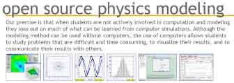

Resources in the OSP Tracker Collection are organized by subject in the table of contents tree on the left. Double-click red font folders to display their resources.
Click a resource in the tree to learn more about it in an html page here. Double-click the resource to open it in Tracker. For more information about a resource, including curricular materials, click the hyperlink at the bottom of its html page.
If you are unable to find a desired resource in the table of contents tree you may: